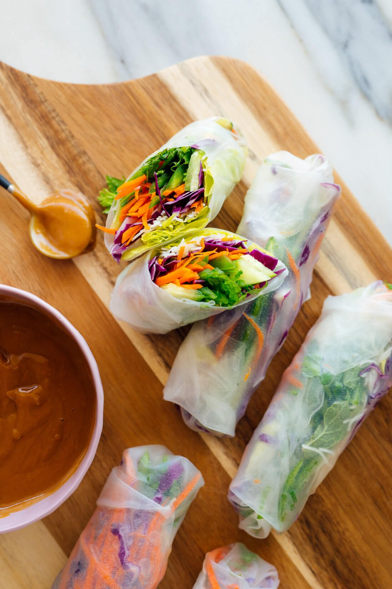

Fresh Spring Rolls with Peanut Sauce

Description
These spring rolls are refreshing, colorful and fun to make. I left out tofu (you really can’t pack enough into the rolls to make it worthwhile) and shrimp, since I don’t eat shrimp.
These filling ingredients are flexible. You can use more carrot instead of cucumber, or extra cabbage in place of the lettuce.
These Vietnamese spring rolls are fresh, not fried! They’re the perfect party appetizer or light meal. The peanut sauce sends them over the top. Recipe yields 8 spring rolls.
Ingredients
Spring Rolls
- 2 ounces rice vermicelli or maifun brown rice noodles*
- 1 teaspoon toasted sesame oil
- ¼ teaspoon fine sea salt
- 1 cup torn butter lettuce, ribs removed
- 1 cup very thinly sliced red cabbage
- 2 medium carrots, peeled and cut into matchsticks or sliced into strips with a julienne peeler
- 2 Persian (mini) cucumbers or 1 small cucumber, thinly sliced or sliced into strips with a julienne peeler
- 2 medium jalapeños, ribs and seeds removed, thinly sliced
- ¼ cup thinly sliced green onions
- ¼ cup roughly chopped fresh cilantro
- ¼ cup roughly chopped fresh mint
- 8 sheets rice paper (spring roll wrappers)
Peanut Sauce
- ⅓ cup creamy peanut butter
- 2 tablespoons rice vinegar
- 2 tablespoons reduced-sodium tamari or soy sauce
- 2 tablespoons honey or maple syrup
- 1 tablespoons toasted sesame oil
- 2 cloves garlic, pressed or minced
- 2 to 3 tablespoons water, as needed
Steps
- To make the spring rolls: Bring a pot of water to boil and cook the noodles just until al dente, according to package directions. Drain, rinse them under cool water, and return them to the pot. Off the heat, toss the noodles with the sesame oil and salt, and set aside.
- Fill a shallow pan (a pie pan or 9″ round cake pan works great) with an inch of water. Fold a lint-free tea towel in half and place it next to the dish. Make sure your prepared fillings are within reach. Combine the green onion, cilantro and mint in a small bowl, and stir.
- Place one rice paper in the water and let it rest for about 20 seconds, give or take. You’ll learn to go by feel here—wait until the sheet is pliable but not super floppy. Carefully lay it flat on the towel.
- Leaving about 1 inch of open rice paper around the edges, cover the lower third of the paper with a few pieces of butter lettuce, followed by a small handful of rice noodles, some cabbage, and a few strips of carrot, cucumber and jalapeño. Sprinkle generously with the herb mix.